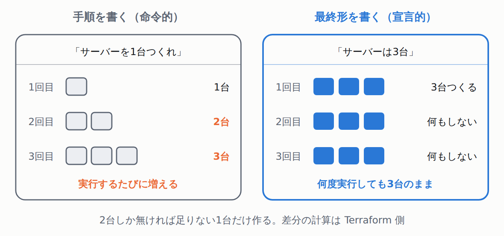

管理画面でポチポチ作るほうが、1回目は速い
AWSの管理画面でサーバーを1台作るのに、Terraformは要りません。画面を開いてボタンを押すほうが速いです。
問題は2回目です。「本番と同じものを検証環境にもう1組」と言われた瞬間に詰みます。何をどう押したか、誰も正確には覚えていません。
- IaC（Infrastructure as Code）とは。サーバーやネットワークの構成を、画面をクリックして作るのではなくテキストファイルに書き、そのファイルから作る考え方です。
- プロビジョニングとは。サーバーやファイルなどの実体を、実際に用意することです。Terraformがやるのはこれです。
- Terraform とは。設定ファイルに書いた内容を、クラウドのAPIを叩いて実際に作る・変える・消すツールです。
- AWS / クラウド / API とは。クラウドは「インターネット越しにサーバーを借りる仕組み」、AWS（Amazon Web Services）はその代表格でAmazonが提供するものです。APIは「人が画面を操作する代わりに、プログラムが命令を送るための窓口」です。Terraform は画面ではなくこの窓口を使います。
ここで大事なのは、Terraformに書くのが手順書ではないことです。公式の説明がそのまま答えになっています。
HashiCorp「What is Terraform?」— 原文
Terraform configuration files are declarative, meaning that they describe the end state of your infrastructure. You do not need to write step-by-step instructions to create resources because Terraform handles the underlying logic. （Terraform の設定ファイルは宣言的で、 インフラの最終状態を記述する。 リソースを作る手順を1つずつ書く必要は ない。裏側のロジックは Terraform が 引き受けるから）
- 宣言的（declarative）とは。「こういう手順で作れ」ではなく「最終的にこうなっていてほしい」を書く書き方です。今の状態との差分は Terraform が計算します。
- だから同じファイルを何度実行しても増えません。「3台ほしい」と書いてあれば、3台あるときは何もしません。2台なら1台足します。

「Terraform はオープンソース」は、いま正確ではありません
古い入門記事はだいたいそう書いていますが、リポジトリの LICENSE を読むと今は違います。
hashicorp/terraform の LICENSE（main ブランチ / Parameters の3項目）
Licensor: International Business Machines Corporation (IBM) Licensed Work: Terraform Version 1.6.0 or later. The Licensed Work is (c) 2024 IBM Corp. Additional Use Grant: You may make production use of the Licensed Work, provided Your use does not include offering the Licensed Work to third parties on a hosted or embedded basis in order to compete with IBM Corp.'s paid version(s) of the Licensed Work. For purposes of this license: （このあと「競合サービス（competitive offering）」の定義が続きます。 原文で継続行の頭に付く22文字分の 空白だけ詰めました）
- BUSL-1.1 とは
- Business Source License 1.1。競合サービスとして第三者に提供することは禁じますが、通常の本番利用は許す条件付きのライセンスです。個人の学習も、自社のインフラを作るのも、上の追加使用許諾の範囲内です。
- ライセンサが IBM になっている
- LICENSE ファイルにそう書かれています。ソースコード先頭のコメントも
// Copyright IBM Corp. 2014, 2026でした。 - OpenTofu とは
- ライセンス変更前の Terraform から分かれた互換ツールです。公式サイトのトップにこう書かれています。
OpenTofu is a reliable, flexible, community-driven infrastructure as code tool under the Linux Foundation's stewardship. It serves as a drop-in replacement for Terraform, preserving your existing workflows and configurations.（Linux Foundation の管理下にある IaC ツール。Terraform のドロップイン置き換えとして機能し、既存のワークフローと設定をそのまま使える）。公式ドキュメントにもThe core OpenTofu workflow consists of three stagesとあり、Write / Plan / Apply の3段階は同じです。この記事で覚えることは両方で通用します。ただし「既存の設定がそのまま使える」はOpenTofu自身の説明であって、筆者が動かして確かめたものではありません。
なお、ライセンス変更そのものを告知した HashiCorp 公式ブログは本文を取得できませんでした（HTTP 429 が返る）。読んでいないので引用しません。時系列は別の資料で確認しています（参考文献を参照）。